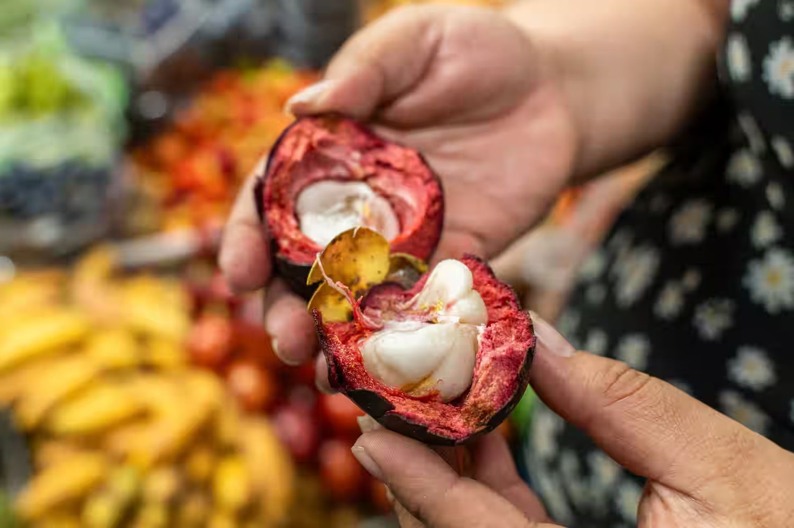
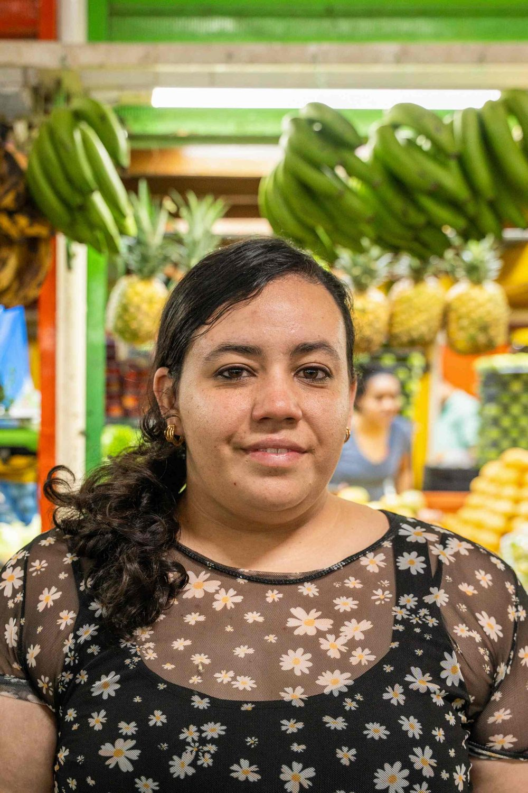
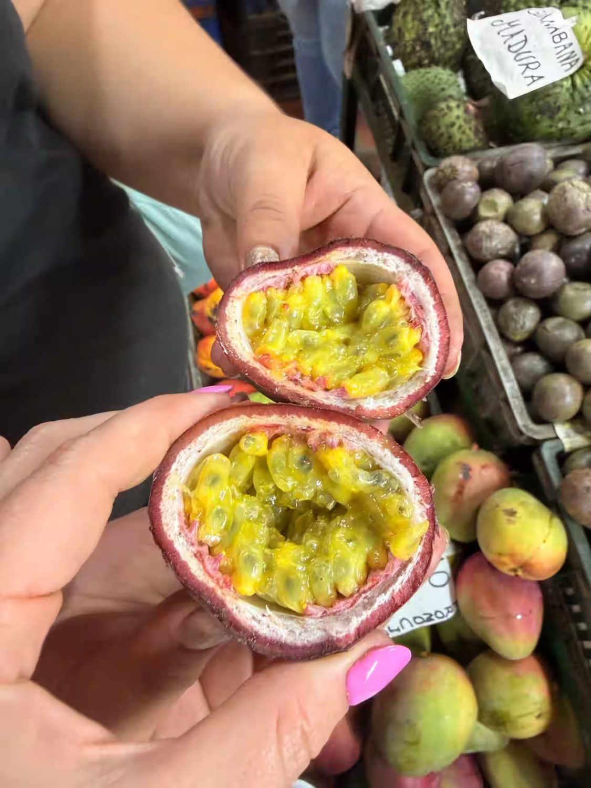
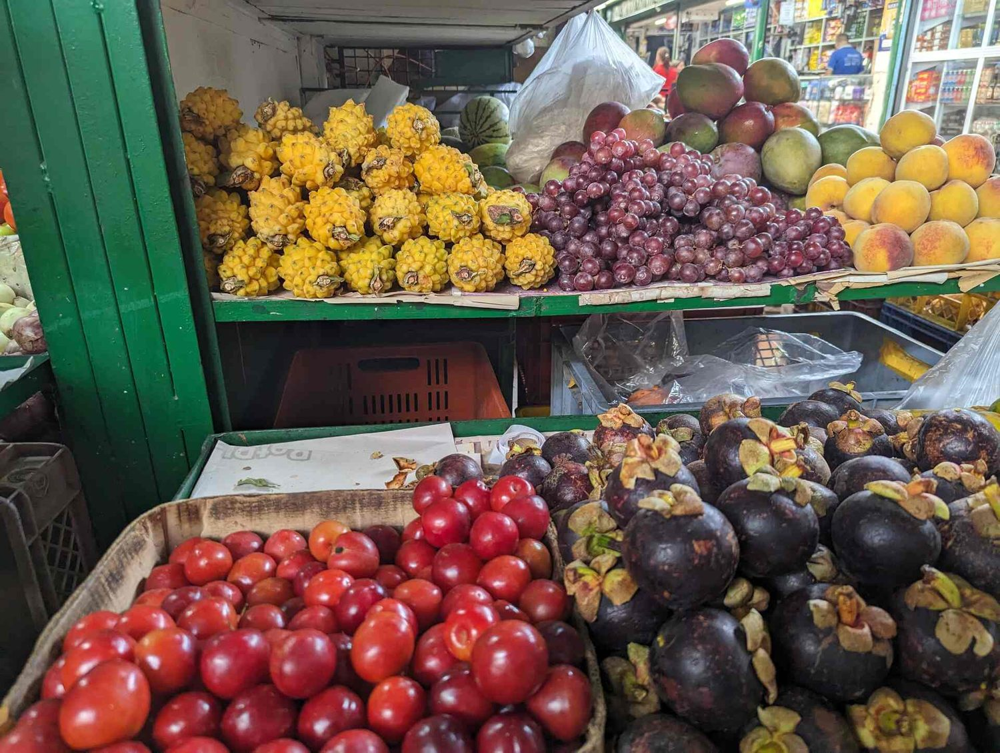
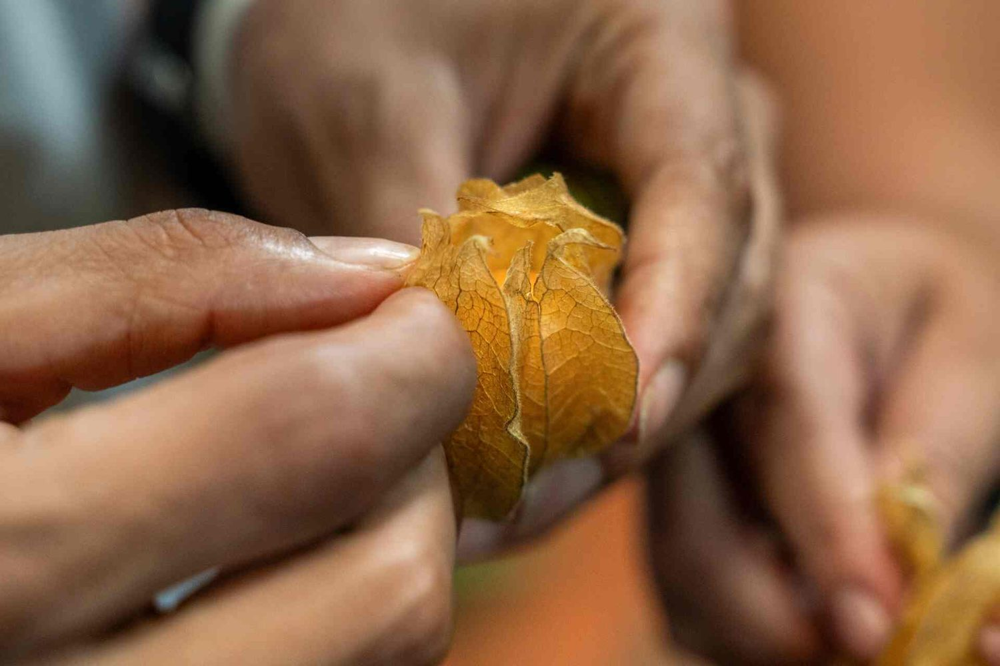
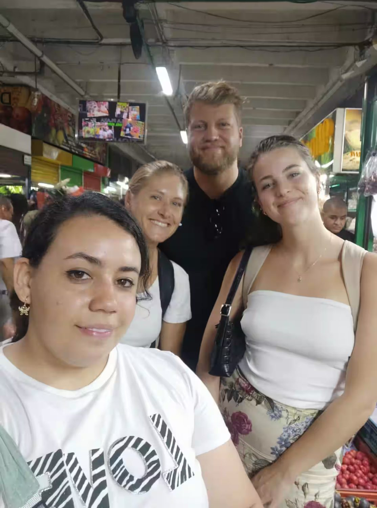
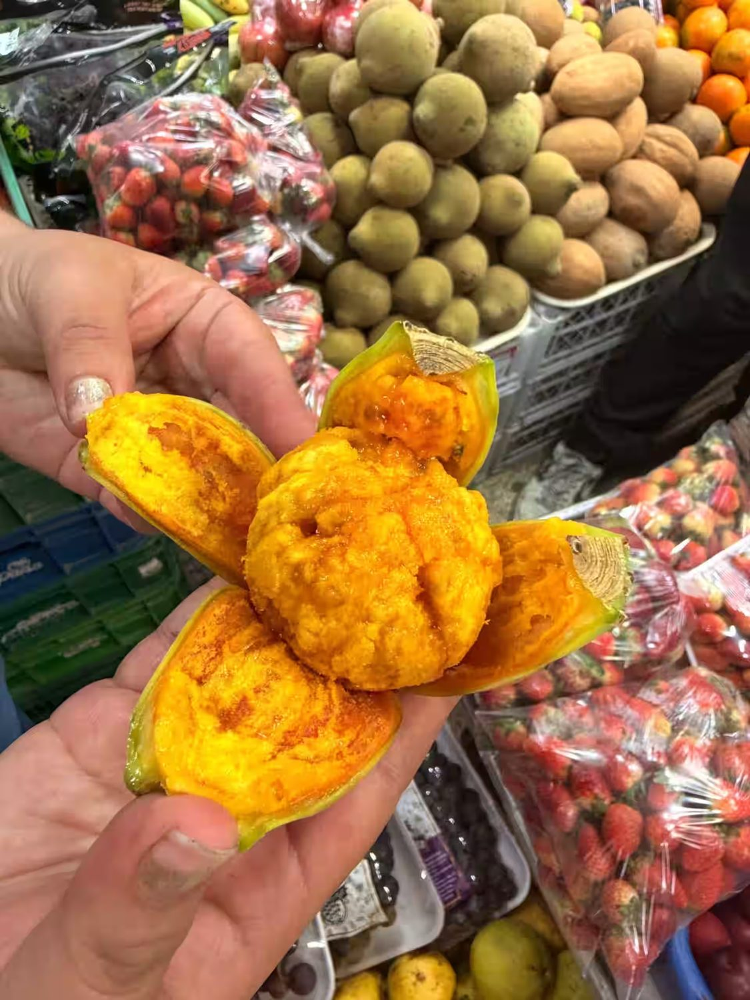
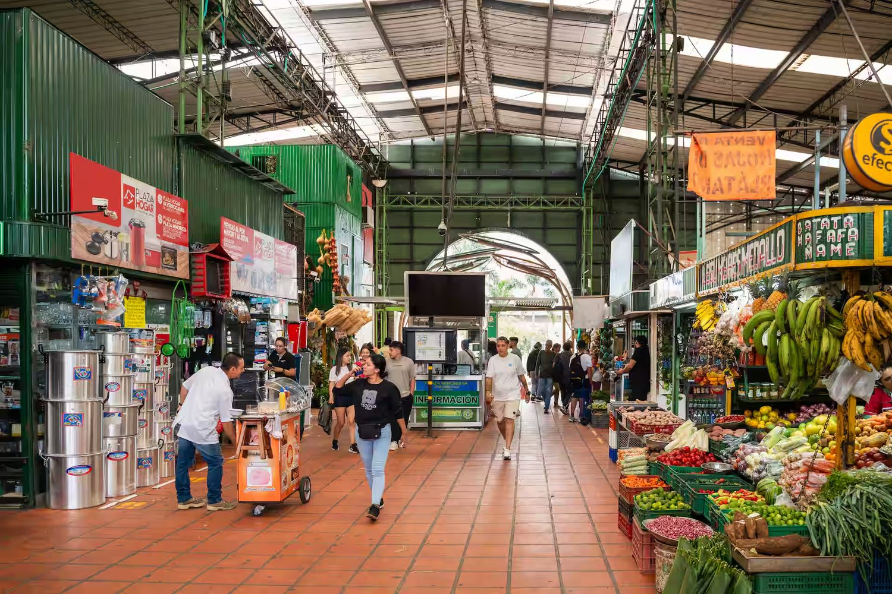
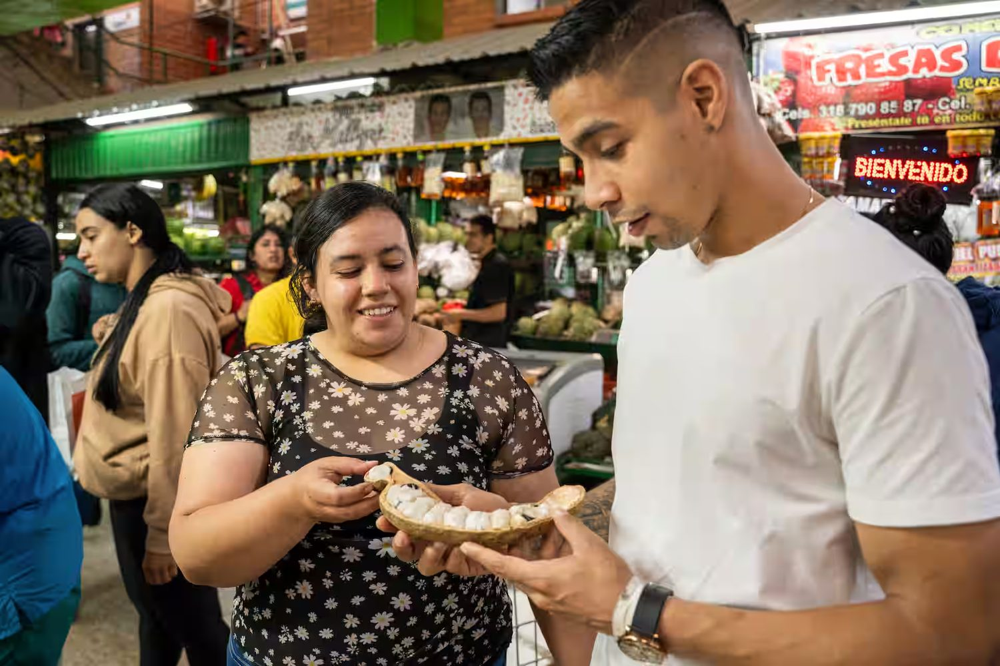

01Taste the fruit
Unknown flavors — sweet, tart, creamy, and surprising — cut open fresh in front of you.
With Ana María · Plaza Minorista
Ana María welcomes you to Medellín's Plaza Minorista to taste fruits almost no one knows, chat with the local vendors, and discover flavors that usually go unnoticed. Warm, unhurried, and wonderfully local.

What you'll do
Four moments Ana María takes care of, so you leave with new flavors and a story to tell.

01Unknown flavors — sweet, tart, creamy, and surprising — cut open fresh in front of you.

02Ana María shares the benefits, origins, and the right way to eat each fruit.

03Walk through San Benito and feel the living rhythm of Medellín's Plaza Minorista.

04Ideas for juices, snacks, desserts, and local recipes you can make at home.

Your host
"I'm Ana María — a student and entrepreneur. Since 2018 I've been getting to know fruits and their exotic flavors. Colombia has a huge variety of fruits that are little known in other countries, and I love sharing them."
Explore flavors

Gallery
Fruits, travelers, and the stalls of Plaza Minorista. Tap any photo to view it larger.
Suggested route

Good to know

Direct booking
Put your message together and WhatsApp opens ready to send. Ask about times, group availability, or the tour language.
+57 319 7333300